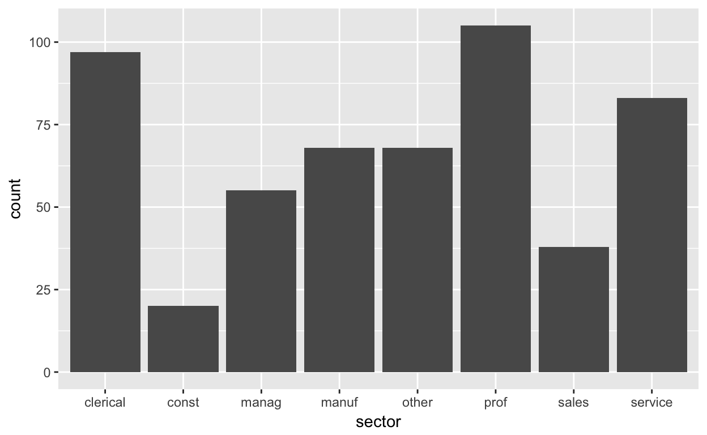
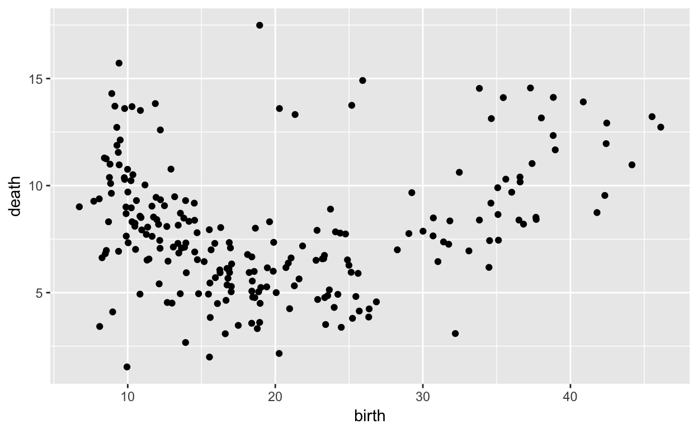
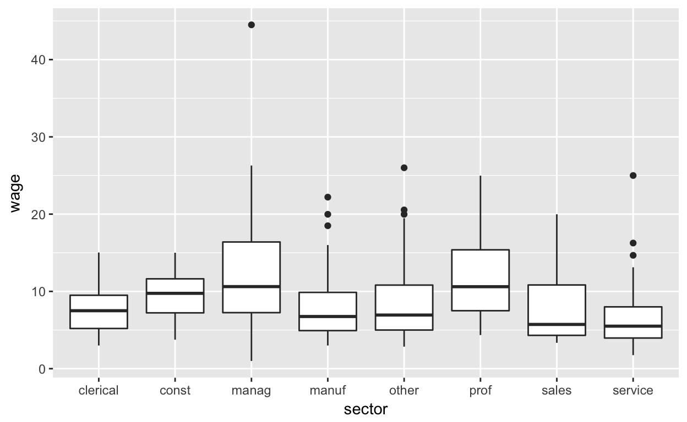

data(CPS85, package = "mosaicData")
library(ggplot2)
library(DataComputing)
library(statisticalModeling)In the previous chapter, you graphed a summary of the CPS85 data like that shown in the figure: counts of people working in each sector of the economy.
gf_counts(~ sector, data = CPS85)
In this exercise, you’re going to add new aethetics to the bars and facet the graph. Things have been set up so that you need only replace the blanks ___ with the appropriate variable.
union. To do this, fill in the blank following fill: with the variable that is to be mapped to the fill aesthetic.sex. To do this, complete the formula argument to the facet_grid() function.library("statisticalModeling")
library("ggplot2")
data(CPS85, package = "mosaicData")
gf_counts( ~ sector + fill:___, data = CPS85) + facet_grid( ~ ___)Put the right variable names in the blanks.
library(statisticalModeling)
library(ggplot2)
data(CPS85, package = "mosaicData")
gf_counts( ~ sector + fill:union, data = CPS85) + facet_grid( ~ sex)# put pre-evaluation checking here. This can be blank, in which case
# the code will be checked by the interpreter with the usual R error messages
# shown in the even of a problem.
check_blanks(USER_CODE)set_success_message("Good job!") # change as you like
test_1 <- find_call("gf_counts()")
test_2 <- check_argument("gf_counts(grab_this, whatever)",
test = match_formula(~ sector + fill:union),
message = "set the fill aesthetic using `union`.")
test_3 <- find_call("facet_grid()", "remember to facet the graph")
test_4 <- check_argument("facet_grid(grab_this)",
test = match_formula(~ sex),
message = "facet the graph by `sex`")
USER_CODE %>% test_1 %>% test_2 %>% test_3 %>% test_4 library(DataComputing)
library(statisticalModeling)The figure shows a graph of death rates versus birth rates, country by country. There’s a U-shaped pattern in the graph: at low birth rates, as birth rate increases from one country to another the death rate goes down. But for high birth rates, increasing birth rate is associated with increasing death rate.
gf_point(death ~ birth, data = CountryData)
One possible explanation for the U-shaped pattern is this: In countries with good health, the death rate is largely shaped by the age distribution in the country. In such countries, a high birth rate is associated with a younger population, hence one with a lower death rate. (Example: Mexico, which has a much lower death rate than its neighbor, the US) In countries with poor health, the death rate is high. But at the same time, women in those countries have many children who, often, have a high mortality rate.
The graphic, as it is, does not incorporate the overall health of countries, so it’s not possible to compare the hypothesis in the previous paragraph with the data.
life) is one measure of a country’s overall health.life to the glyph size in the plot. Do this by adding on to the formula: + size:life.life, use color. You do this by modifying the formula in the obvious way, color:life in place of size:life.The formula will have two parts on the right-hand side of the tilde: death ~ birth + size:life.
gf_point(death ~ birth + size:life, data = CountryData)# put pre-evaluation checking here. This can be blank, in which case
# the code will be checked by the interpreter with the usual R error messages
# shown in the even of a problem.
check_blanks(USER_CODE)set_success_message("Good. Many design choices in graphic design are a matter of mapping variables to the aesthetic properties of glyphs. In the `gf_` function formulas, the variable on the left of the tilde determines the variable mapped to y. The first variable on the right sets the variable to be mapped to x. Then other aesthetics are set by pairs in the form aethetic:variable, for instance `size:life` or `color:life`.") # change as you like
test_1 <- find_call("gf_point()", "use the `gf_point()` function to make a scatter plot.")
test_2 <- check_argument("gf_point(grab_this, whatever)",
test = match_formula(death ~ birth + size:life),
message = "`death` should be on the y axis, `birth` on the x axis, and `life` should be mapped to the size aesthetic.")
USER_CODE %>% test_1 %>% test_2In the scratch pane below, remake the graph using different aesthetics for the life variable, e.g. color, alpha, shape.
Here’s a simple box-and-whisker plot of wage versus sector of the economy from the mosaicData::CPS85 data:
library(statisticalModeling)
data(CPS85, package = "mosaicData")
gf_boxplot(wage ~ sector, data = CPS85)
In this exercise, you’re going to refine the graphic by adding in facets and aesthetics.
sex to the fill aethetic. You do this by adding a term of the form + fill:sex+ facet_grid( ~ union)library(statisticalModeling)library(statisticalModeling)
data(CPS85, package = "mosaicData")
gf_boxplot(wage ~ sector, data = CPS85)Use facet_grid() to set up the faceting. It takes a one-sided formula, ~ var, where var is the name of the variable you want to facet with respect to.
library("statisticalModeling")
data(CPS85, package = "mosaicData")
gf_boxplot(wage ~ sector + fill:sex, data = CPS85) + facet_grid( ~ union)# put pre-evaluation checking here. This can be blank, in which case
# the code will be checked by the interpreter with the usual R error messages
# shown in the even of a problem.
check_blanks(USER_CODE)set_success_message("Nice! Whether it's a good graphic or not depends on what you're trying to show. This one puts the wages of men and women next to each other for each sector, which is good for comparing wages between the sexes. But for other purposes it might be appropriate to put side by side the wages for union and non-union workers, or to facet by `sector`. Different arrangements of the data can reveal different aspects of the data.") # change as you like
test_1 <- find_call("gf_boxplot()", "use `gf_boxplot()`. Just add a fill aesthetic and facet by union.")
test_2 <- find_call("gf_boxplot(whatever, data = CPS85)", "use the `CPS85` data table.")
test_3 <- check_argument("gf_boxplot(grab_this, whatever)",
test = match_formula(wage ~ sector + fill:sex),
message = "add the fill aesthetic to the formula and map `sex` to fill with `+ fill:sex`")
test_4 <- find_call("facet_grid()", "remember to use the `facet_grid()` function.")
test_5 <- check_argument("facet_grid(grab_this)",
test = match_formula(~ union),
message = "use a one-sided formula with `union` on the right side.")
USER_CODE %>% test_1 %>% test_2 %>% test_3 %>% test_4 %>% test_5